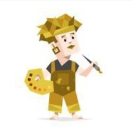

ISFP : شخصية المغامر

شخصية انطوائية ، حسية ، عاطفية ، مرنة
يميل المغامر لأن يكون متحفظاً وهادئاً، ومن الصعب فهمه بشكل جيد. ويخفي أفكاره وآرائه عن الأشخاص إلا أولئك المقربين منه. غالباً مايكون المؤلف لطيف، محترم، وحساس في تعامله مع الآخرين. ويميل المؤلف للمساعدة في جعل الناس يشعرون بالرفاهية والسعادة، وسيضع الكثير من الجهد والطاقة في أي عمل يؤمن به.
فنانون مرنون و ساحرون ، على استعداد دائم لتجربة شيء جديد
كل ما يسعى اليه هو العاطفة
نقاط القوة
- يركز على الإستمتاع باللحظة
- استقرار الحالة المزاجية
- الالتزام بالقواعد والإجراءات
- يراعون مشاعر غيرهم
- غالبًا تكون نصائحم وحلولهم منطقية وعملية
- يستمعون في الكثير من الأحيان لصوت القلب
- لديهم خيال مبدع مليئ بالحياة والمغامرة
كيف يراك الناس
نقاط الضعف
- كسول في بعض اللحظات
- قد يكون بطيئاً في التعبير عن المودة بالكلمات
- لا يفضّل أصحاب الشخصية المغامرة الالتزامات والخطط بعيدة المدى
ISFP كأب و أم
داعمين متساهلين ولا يعطون اطفالهم توقعات عالية ، غالبا ما يكونوا مقبولين جدا عند اطفالهم ، يشجعون اطفالهم على ان يكونوا ع طبيعتهم ويتفهمون اختلافاتهم للغاية ، يخفقون في اعطاء الهيك المناسب لأطفالهم المناسب لاطفالهم بدورهم كآباء وامهات
ISFP كطالب
الفنان المرح جدآ وغير تقليدي ولديه حس في الموضة
نسبـة isfp في العالم : 8.8٪